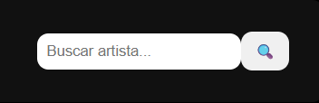
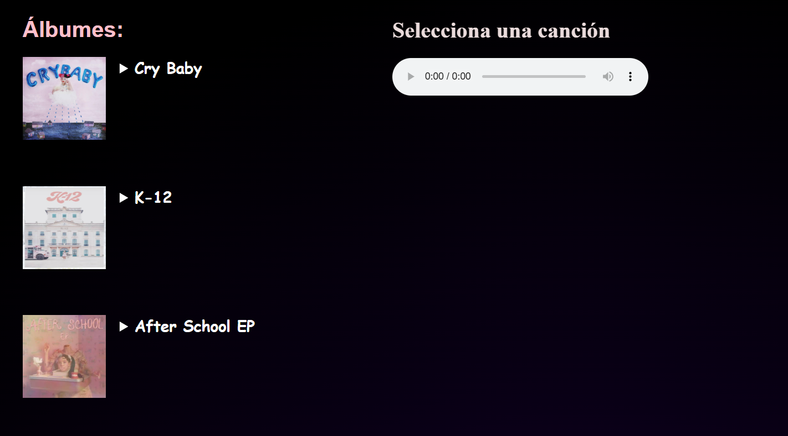
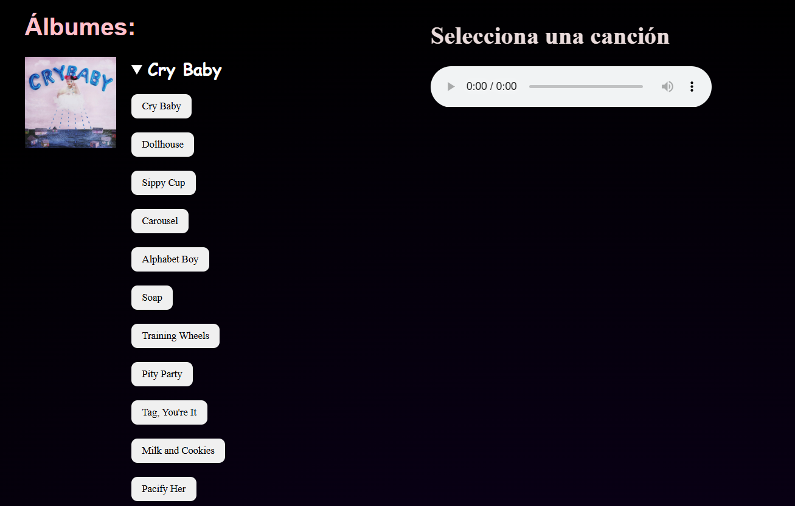
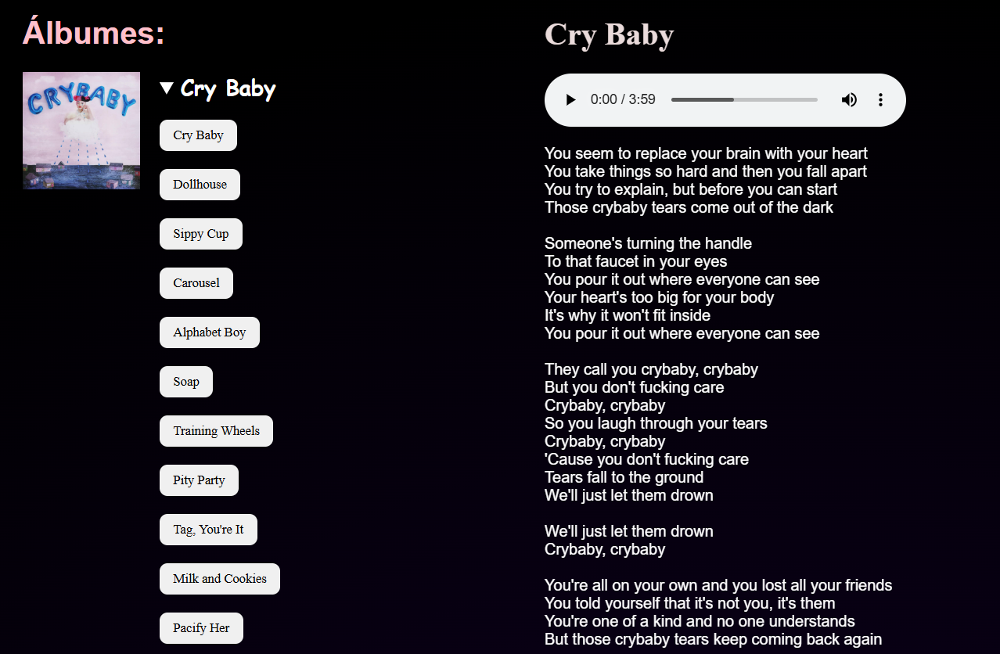
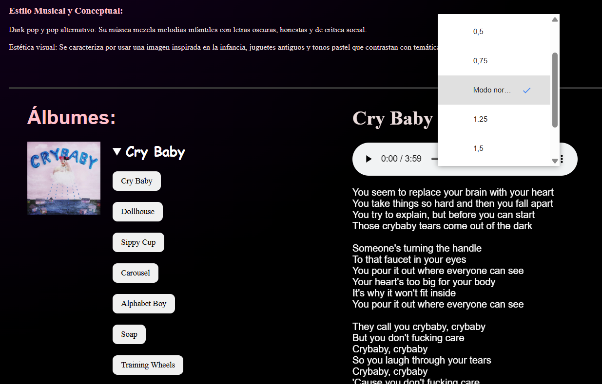
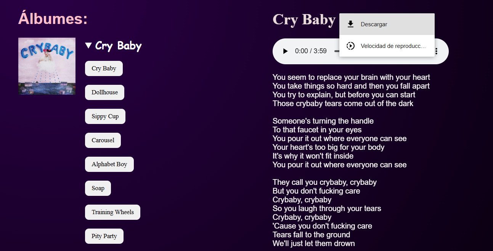
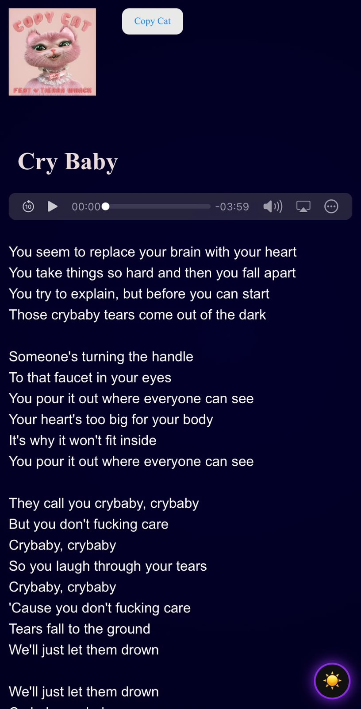

Origen de la página:
Esta página web fue creada con el objetivo de preservar artistas y sus canciones en un mismo lugar.
Nació de la idea de no estar buscando canción por canción de un mismo artista, sino que todo se encuentre de manera más fácil con su respectiva letra y un reproductor en el cuál se pueden descargar las canciones.
¿Cuál es su propósito?
Crear un espacio sencillo y agradable para descubrir artistas y conocer un poco más sobre su música.
Funcionamiento:
- Buscas a tu artista en el buscador de la parte superior derecha y te llevará directamente a su perfil.

- En el perfil del artista aparecerán sus álbumes.

- Deberás de darle click al nombre del álbum para desplegar las canciones del mismo.

- Luego seleccionas la canción y la letra junto al reproductor se habilitarán a la derecha, apareciendo la letra de la canción seleccionada y la opción de reproducirla.

- El reproductor, además de reproducir la canción tiene 2 funciones adicionales: el poder elegir la velocidad de reproducción.

- Y la opción de descargar la canción.

- Lo mismo para dispositivo movil, solamente que el reproductor se encuentra en la parte de abajo.
